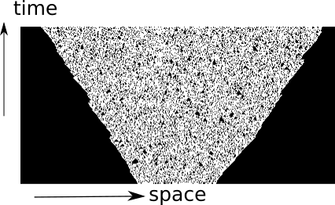

Quantum Circuits II
Some special kinds of circuits

austen.uk/slides/quantum-circuits-2-icts for slides
Outline
Circuits with special structure \(\longrightarrow\) theoretical progress / new insights
Random circuits
Dual unitary circuits
Other possibilities: Clifford (Arijeet’s talk), free fermions, …
Reminder: operator spreading
\[ Z_n(t)= \sum_{\mu_{1:N}=\\{1,x,y,z\\}^N} \mathcal{C}\_{\mu_{1:N}}(t) \sigma_1^{\mu_1}\otimes\cdots \sigma_N^{\mu_N} \]
- Operator norm \(\tr\left[Z\_n^2(t)\right]=2\) is conserved under time evolution
\[ \sum_{\mu_{1:N}=\\{1,x,y,z\\}^N} \mathcal{C}^2\_{\mu_{1:N}}(t) = \frac{1}{2^{N-1}} \]
Describing operator spreading
- Correlation function \(\langle Z_j(t)Z_k(0)\rangle\) captures only a single coefficient
\[ \langle Z_j(t)Z_k(0)\rangle=C_{jk}(t) \equiv \mathcal{C}_{1\cdots \mu_k=z \cdots 1}(t) \]

- What about the rest?
Out of time order correlator
\[ \operatorname{OTOC}_{jk}(t) \equiv \langle Z_j(t)Z_k(0)Z_j(t)Z_k(0)\rangle \]
- OTOC sometimes written as squared commutator
\[ \langle \left[Z_k(0),Z_j(t)\right]^2 \rangle \]
- Relation between two expressions is (using \(Z^2=1\))
\[ \operatorname{OTOC}_{jk}(t) = \frac{1}{2}\langle \left[Z_k(0),Z_j(t)\right]^2 \rangle + 1 \]
\[ \operatorname{OTOC}_{jk}(t) = \frac{1}{2}\langle \left[Z_k(0),Z_j(t)\right]^2 \rangle + 1 \]
- At short times commutator vanishes so \(\operatorname{OTOC}_{jk}(t\to 0)=1\)
\[ \operatorname{OTOC}\_{jk}(t)= 2^{N-1} \sum_{\mu_{1:N}}\mathcal{C}\_{\mu_{1:N}}^2(t)\left[\delta_{\mu_k,0}+\delta_{\mu_k,3}-\delta_{\mu_k,1}-\delta_{\mu_k,2}\right] \]
\(\operatorname{OTOC}\_{jk}(t)\neq 1\) after operator \(Z_j(t)\) spreads from site \(j\) to site \(k\)
Characteristic speed of propagation of OTOC is “butterfly velocity” \(v_\text{B}\)
Since OTOC depends on square of the coefficients, a nonzero value survives after averaging over random circuits
Google’s OTOC experiment
- OTOC measured in 2021 by Google

Remark: operator entanglement
OTOC provides one measure of operator spreading
Another question: how many nonzero coefficients \(\mathcal{C}\_{\mu_{1:N}}\)?
Introduce Schmidt decomposition for operators \[ \mathcal{O}\_{AB} = \sum\_{n=1}^{\min(n^2_A, n^2_B)} \Sigma\_n A_n\otimes B_n \]
\(\Sigma_n\geq 0\) are operator Schmidt coefficients
\(A_n\) and \(B_n\) are orthonormal operators on \(\mathcal{H}\_A\) and \(\mathcal{H}\_B\) i.e. \(\tr\left[A^\dagger_m A_n\right]=\tr\left[B^\dagger_m B_n\right]=\delta_{mn}\)
Same entanglement measures as before be applied to evaluate the operator entanglement
Simplest example, analogous to Bell state, is SWAP operator
\[ \operatorname{\mathsf{SWAP}}=\frac{1}{2}\left[X\otimes X+Y\otimes Y+Z\otimes Z + \mathsf{1}\otimes\mathsf{1}\right] \]
- All Schmidt coefficients are equal (maximum operator entanglement)
Random circuits
- Met this idea last time: average over \(\theta\) in
\[ U\_{j,j+1} = \cos\theta \mathbb{1}\_{j,j+1} + i\sin\theta \operatorname{\mathsf{S}}\_{j.j+1} \]
- Now consider even more random gates: average uniformly over single site unitaries
Why?
No symmetries so results should be generic (“in some sense”)
(real reason) Averaging over circuits simplifies things considerably, sometimes allowing tractable classical description
Choose gates iid. Other options: randomness in space but not time
Recent review: Fisher et al (2023)
OTOC in random circuits
\[ \operatorname{OTOC}_{jk}(t) \equiv \langle Z_j(t)Z_k(0)Z_j(t)Z_k(0)\rangle \]
OTOC can be extracted by appropriately contracting indices in \(Z_j(t)\otimes Z_j(t)\) (two copies)
When we average over random unitaries, only certain components survive
Single qubit unitaries identified with rotations, so look for scalar operators made from two copies on each site
\[ \mathsf{1}\otimes\mathsf{1},\qquad \frac{1}{3}\left[X\otimes X+Y\otimes Y + Z\otimes Z\right] \]
Different papers prefer different bases. The most popular choice is \[ \mathsf{1}\otimes\mathsf{1},\qquad \operatorname{SWAP} \] (recall that \(\operatorname{\mathsf{SWAP}}=\frac{1}{2}\left[X\otimes X+Y\otimes Y+Z\otimes Z + \mathsf{1}\otimes\mathsf{1}\right]\))
Advantage: generalizes to multiple copies
General set of invariants are generalized SWAP operators corresponding to permutations of copies (for two copies only two permutations)
- Now use invariant local basis to expand average of two copies
\[ \mathcal{O}^{(2)}(t)=\overline{O(t) \otimes O(t)} \equiv \overline{O(t)^{\otimes 2}} \]
\[ \begin{align*} \mathsf{O} &\equiv\mathsf{1}\otimes\mathsf{1} \\\ \mathsf{1}&\equiv\frac{1}{3}\left[X\otimes X + Y\otimes Y+ Z\otimes Z\right] \end{align*} \]
- Introduce basis \(\mathsf{S}_{1:N}\equiv\mathsf{S}_1\otimes \mathsf{S}_2\otimes\cdots \mathsf{S}_N\), with \(\mathsf{S}_j=\mathsf{0},\mathsf{1}\)
\[ \mathcal{O}^{(2)}(t) = \sum\_{\mathsf{S}\_{1:N}\in\\{\mathsf{0},\mathsf{1}\\}^N} P\_{\mathsf{S}\_{1:N}}(t)\mathsf{S}\_{1:N} \]
- Coefficients \(P\_{\mathsf{S}\_{1:N}}(t)\) describe averaged OTOC
Next find how \(P\_{\mathsf{S}\_{1:N}}(t)\) are updated by a single gate (after averaging)
Gate acting on sites \(j\) and \(j+1\) yields
\[ U^\dagger_{j,j+1}\otimes U^\dagger_{j,j+1} \mathcal{O}^{(2)}(t)U_{j,j+1}\otimes U_{j,j+1} \]
Take \(U_{j,j+1}\) of form \[ U_{j,j+1} = V_{j,j+1} u_j \otimes u_{j+1} \] where \(u_j\) and \(u_{j+1}\) are single quibit unitaries chosen uniformly
After averaging all non-invariant components vanish and invariant components don’t depend on \(u_j\) and \(u_{j+1}\)
Extract \(P\_{\mathsf{S}\_{1:N}}(t+1)\) using orthgonality \(\tr\left[\mathsf{O}\mathsf{1}\right]=0\)
\[ P\_{\mathsf{S}\_{1:N}}(t+1) = \sum\_{\mathsf{S}'\_j, \mathsf{S}'\_{j+1}} P\_{\mathsf{S}\_1\cdots \mathsf{S}'\_j \mathsf{S}'\_{j+1}\cdots \mathsf{S}\_N}(t)\Omega\_{\mathsf{S}'\_j \mathsf{S}'\_{j+1},\mathsf{S}\_j \mathsf{S}\_k} \]
Precise form of matrix \(\Omega\) depends on \(V_{j,j+1}\) “core”
Use conservation of operator norm \(\tr\left[O(t)^\dagger O(t)\right]\)
\[ \overline{\tr\left[O(t)^\dagger O(t)\right]} = 2\sum\_{\mathsf{S}\_{1:N}\in\{\mathsf{0},\mathsf{1}\}^N} P\_{\mathsf{S}\_{1:N}} \]
\[ \sum_{S_j, S_{j+1}}\Omega\_{\mathsf{S}'\_j \mathsf{S}'\_{j+1},\mathsf{S}\_j \mathsf{S}\_k} = 1 \]
- If matrix elements additionally nonnegative we have a Markov process, with transition matrix \(\Omega\)
- For Sycamore gate (Google’s OTOC experiment, supplementary material)
\[ \begin{align*} \Omega&=\left(\begin{array}{cccc} 1 & 0 & 0 & 0 \\\ 0 & 1-a-b & a & b \\\ 0 & a & 1-a-b & b \\\ 0 & \frac{b}{3} & \frac{b}{3} & \left(1-\frac{2}{3} b\right) \end{array}\right) \\\ a&=\frac{1}{3}\left(2 \sin ^{2} \theta+\sin ^{4} \theta\right) \qquad b=\frac{1}{3}\left(\frac{1}{2} \sin ^{2} 2 \theta+2\left(\sin ^{2} \theta+\cos ^{2} \theta\right)\right) \end{align*} \]
- \(\theta=\pi/2\) for \(i\operatorname{SWAP}\) gate and \(\theta=\pi/4\) for \(\sqrt{i\operatorname{SWAP}}\)
Remarks
Idea that unitary averages over two copies yields a Markov process on the invariant space goes back to Oliveria, Dahlsten, and Plenio (2007), which was concerned with dynamics of average purity \(\gamma\equiv \tr \rho_A^2\)
\(\bar \gamma\) can be extracted from average of two copies of density matrix \(\rho(t)\otimes\rho(t)\). See e.g. Rowlands and Lamacraft (2018) for noisy unitary evolution in continuous time
The Markov process
\[ \begin{align*} \Omega&=\left(\begin{array}{cccc} 1 & 0 & 0 & 0 \\\ 0 & 1-a-b & a & b \\\ 0 & a & 1-a-b & b \\\ 0 & \frac{b}{3} & \frac{b}{3} & \left(1-\frac{2}{3} b\right) \end{array}\right) \end{align*} \]
- Describes transitions
\[ \mathsf{10} \xleftrightharpoons[a]{a} \mathsf{01} \qquad \mathsf{11} \xleftrightharpoons[b/3]{b} \mathsf{10},\mathsf{01} \]
- Note that \(\mathsf{0}=\mathsf{1}\otimes\mathsf{1}\) is “inert”: there no transitions from or to \(\mathsf{00}\)
Fredrickson–Andersen model
\[ \mathsf{10} \xleftrightharpoons[a]{a} \mathsf{01} \qquad \mathsf{11} \xleftrightharpoons[b/3]{b} \mathsf{10},\mathsf{01} \]
- Stationary state: independent sites with \(p_1=3/4\), \(p_0=1/4\)
Butterfly velocity
- Front propagation characterised by finite velocity \(v_\text{B}\)

Front broadening
- Front broadens unless \(v_\text{B}\) maximal as for \(i\operatorname{SWAP}\)


Diffusive in 1D \(\propto \sqrt{t}\)
KPZ dynamics in 2D

- See Nahum, Vijay, and Haah (2018) for much more
Classical simulation?
Efficient simulation of averaged OTOC dynamics via Monte Carlo
Appearance of Markov process a little surprising
OTOC fluctuations
- Circuit-to-circuit fluctuations of OTOC from
\[ \mathcal{O}^{(4)}(t)=\overline{O(t) \otimes O(t) \otimes O(t) \otimes O(t)} \equiv \overline{O(t)^{\otimes 4}} \]
Go through same procedure of identifying invariant states
Evolution of average now involves negative matrix elements
Leads to sign problem in Monte Carlo simulation
Same problem for \(\overline{\operatorname{OTOC}}\) in models with number conservation (Rowlands and Lamacraft)
Dual unitary circuits
Recall: kicked Ising model
- Time dependent Hamiltonian with kicks at \(t=0,1,2,\ldots\).
\[ \begin{align*} H_{\text{KIM}}(t) = H_\text{I}[\mathbf{h}] + \sum_{n}\delta(t-n)H_\text{K}\\\ H_\text{I}[\mathbf{h}]=\sum_{j=1}^L\left[J Z_j Z_{j+1} + h_j Z_j\right],\qquad H_\text{K} &= b\sum_{j=1}^L X_j \end{align*} \]
Entanglement Growth for KIM
- Bertini, Kos, Prosen (2019) found that when \(|J|=|b|=\pi/4\)
\[ \lim_{L\to\infty} S_A =\min(2t-2,N_A)\log 2, \]
- Any \(h_j\); initial \(Z_j\) product state

Entanglement Spectrum
- Rényi entropies depend on eigenvalues of reduced density matrix
$$ S^{(\alpha)}_A = \frac{1}{1-\alpha}\log \text{tr}\left[\rho^\alpha\right]=\frac{1}{1-\alpha}\sum_n p_n^\alpha $$
- For SDKIM have \(2^{\min(2t-2,N_A)}\) non-zero eigenvalues all equal
\[ p_n = \left(\frac{1}{2}\right)^{\min(2t-2,N_A)} \]
Thermalization
After \(N_A/2 + 1\) steps, reduced density matrix is \(\propto \mathbb{1}\)
All expectations (with \(A\)) take on infinite temperature value
Dual unitarity
- Recall KIM has circuit representation

$$ \begin{aligned} \mathcal{K} &= \exp\left[-i b X\right]\\ \mathcal{I} &= \exp\left[-iJ Z_1 Z_2 -i \left(h_1 Z_1 + h_2 Z_2\right)/2\right] \end{aligned} $$
- At \(|J|=|b|=\pi/4\) has additional property of dual unitarity
Reminder from last lecture


“Folded” representations

- Unitarity:

Dual unitary gates
- Impose additional restriction

\(\rho_A\) via dual unitarity
Initial state of NN Bell pairs
8 sites; 4 layers
- \(\rho_A\) is unitary transformation of
\[ \mathbb{1}\otimes\mathbb{1}\otimes\mathbb{1}\otimes\mathbb{1}\otimes\mathbb{1}\otimes\mathbb{1}\otimes\mathbb{1}\otimes\mathbb{1} \]
Shallower…
- \(\rho_A\) is unitary transformation of
\[ \mathbb{1}\otimes\mathbb{1}\ket{\Phi^+}\bra{\Phi^+}\otimes\ket{\Phi^+}\bra{\Phi^+}\otimes\mathbb{1}\otimes\mathbb{1} \]
General case
- RDM is unitary transformation of
\[ \rho_0=\overbrace{\frac{\mathbb{1}}{2}\otimes \frac{\mathbb{1}}{2} \cdots }^{t-1} \otimes\overbrace{\ket{\Phi^+}\bra{\Phi^+} \cdots }^{N_A/2-t+1 } \otimes \overbrace{\frac{\mathbb{1}}{2}\otimes \frac{\mathbb{1}}{2} \cdots }^{t-1} \]
RDM has \(2^{\min(2t-2,N_A)}\) non-zero eigenvalues all equal to \(\left(\frac{1}{2}\right)^{\min(2t-2,N_A)}\)
Converse – maximal entanglement growth implies dual unitary gates – recently proved by Zhou and Harrow (2022)
The dual unitary family
\(4\times 4\) unitaries are 16-dimensional
Family of dual unitaries is 14-dimensional
Includes kicked Ising model at particular values of couplings
Dual unitaries not “integrable” but have enough structure to allow many calculations
‘KIM’ property

(\(q=2\) here) Not satisfied by e.g. \(\operatorname{SWAP}\)
Maps product states to maximally entangled (Bell) states
Product initial states also work for KIM!
Piroli et al (2020) studied more general initial states
Foligno and Bertini (2023) study general initial conditions
Correlation functions
- Infinite temperature correlator \(\tr\left[\sigma^\alpha_x(x,t)\sigma^\beta(y,0)\right]\)

- Bertini, Kos, and Prosen (2019): dual unitarity means correlations vanish inside light cone!
Quantinuum experiment
- Correlations measured in SDKIM last year

Other applications of dual unitarity
Claeys and Lamacraft (2020). \(v_\text{B}=1\). OTOC grows at maximum speed, c.f. Google experiment
Jonay, Kehmani, Ippoliti (2021). Triunitary circuits (incl. 2+1 dimensions)
Stephen et al (2022). Measurement based quantum computation in 1D using dual unitaries
Sommers, Huse, Gullans (2022). Dual unitary Clifford automata with applications to codes
Suzuki, Mitarai, Fujii (2022). Computational power of dual unitaries
Many more!